Mini-report automatico: risultati CV e interpretazione
Metriche per fold
| Fold |
R2 |
MSE |
RMSE |
MAE |
| 1 |
-0.254011 |
953.304286 |
30.875626 |
25.428571 |
| 2 |
-0.091803 |
233.524583 |
15.281511 |
12.575000 |
| 3 |
-3.126710 |
401.207917 |
20.030175 |
18.491667 |
| 4 |
-2.421429 |
342.142917 |
18.497106 |
17.525000 |
| 5 |
-0.468119 |
1186.729167 |
34.448936 |
29.400000 |
Importanze (media ± std)
| feature |
mean_importance |
std_importance |
| TL |
0.329858 |
0.036282 |
| OR |
0.106546 |
0.019596 |
| FR |
0.091591 |
0.022845 |
| PR |
0.085147 |
0.042845 |
| OL |
0.082560 |
0.015254 |
| FL |
0.076273 |
0.017045 |
| TR |
0.067981 |
0.026587 |
| CL |
0.060488 |
0.020293 |
| PL |
0.056460 |
0.009775 |
| CR |
0.043095 |
0.006491 |
Grafici principali
feature_importances_mean_std.png
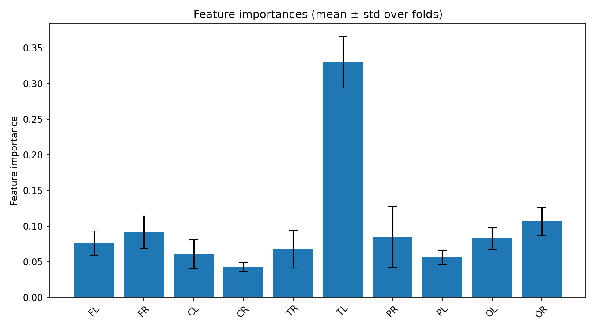
feature_importances_correlation_heatmap.png
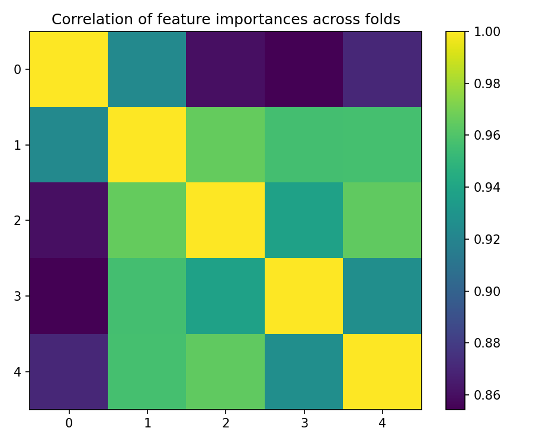
best_fold_2_feature_importances.png
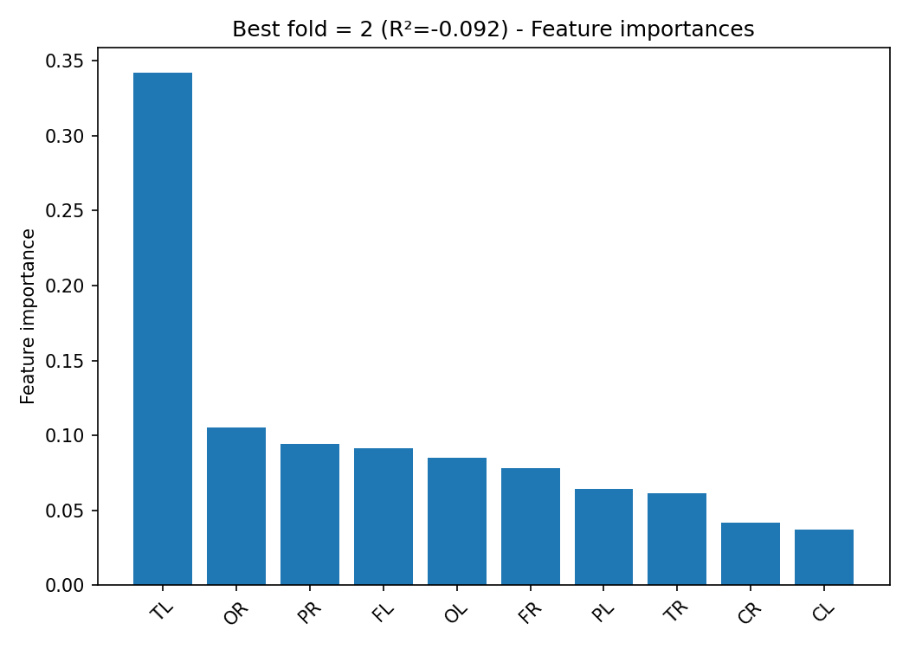
Scatter True vs Predicted (per fold)
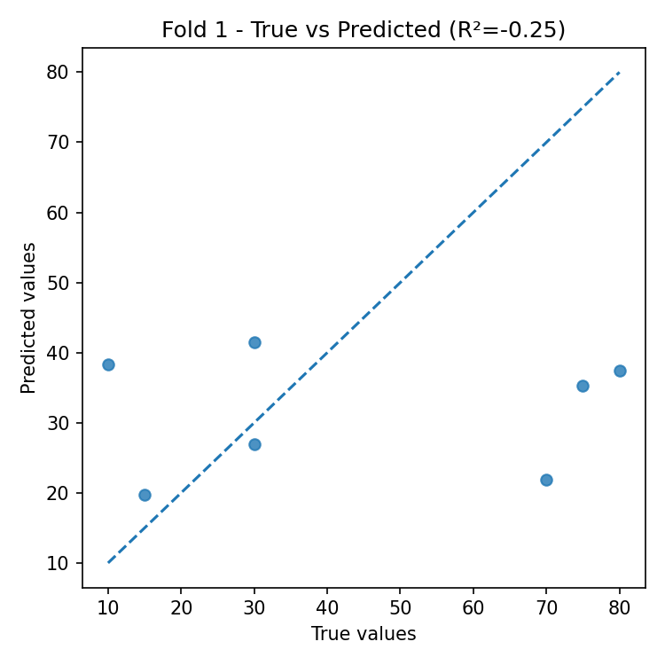
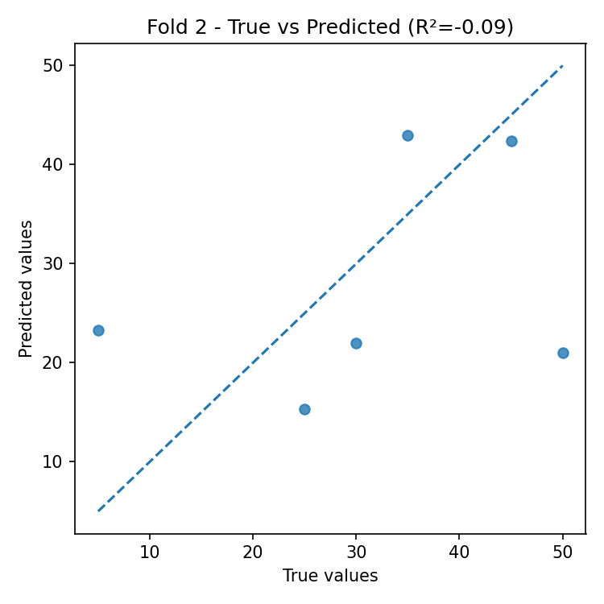
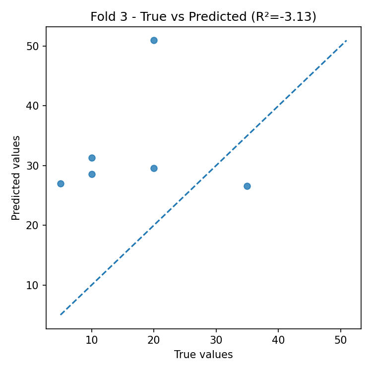
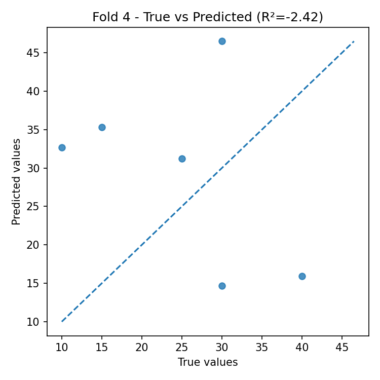
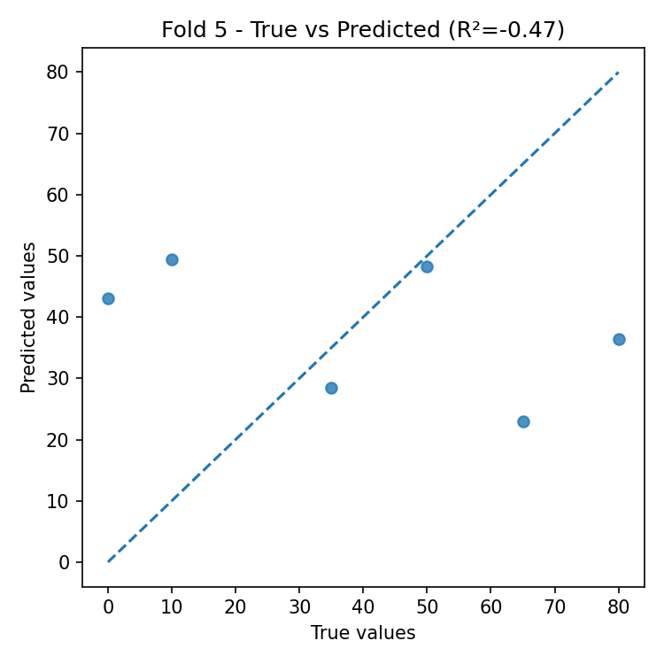
Residual plots (per fold)
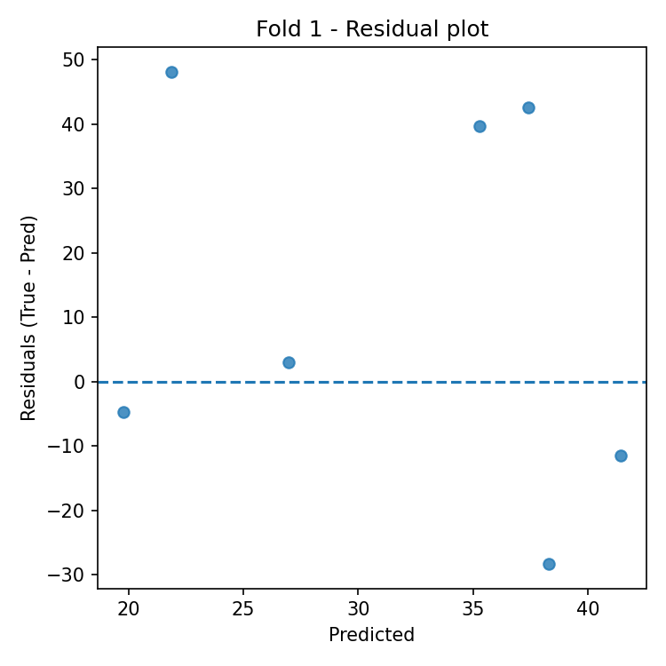
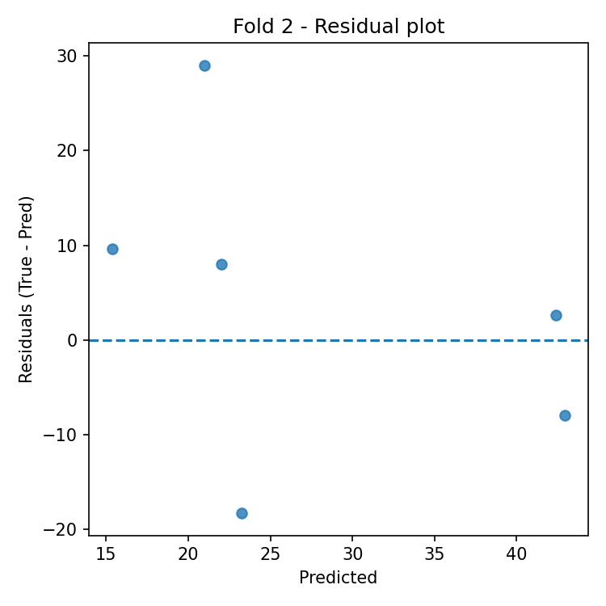
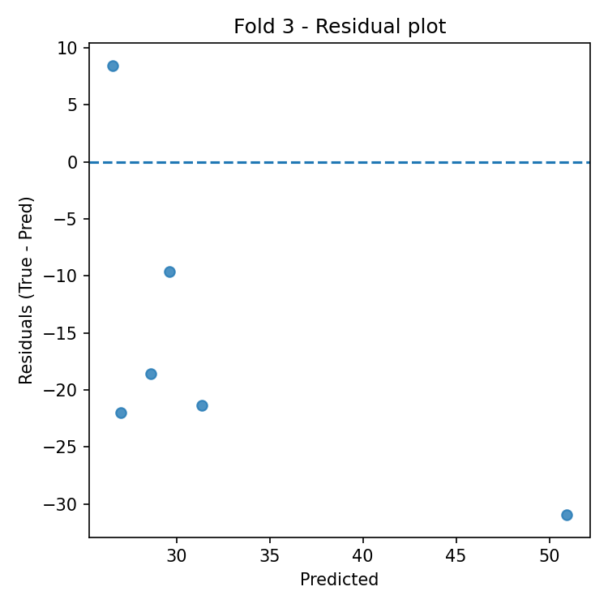
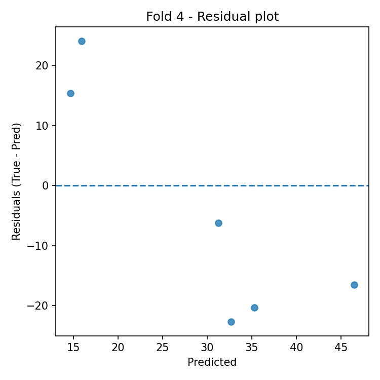
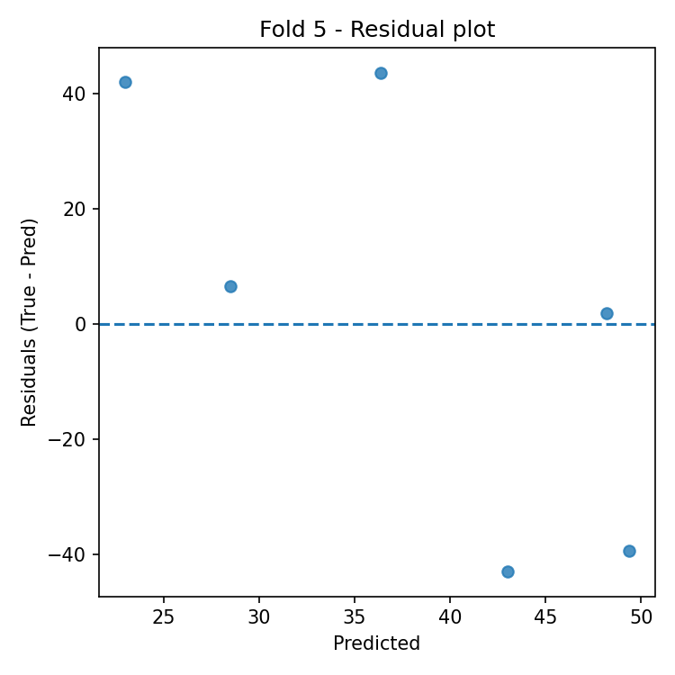
Interpretazione automatica
Performance complessiva
- Media R² sui fold: -1.272 (± 1.400).
- Errore medio: RMSE = 23.827, MAE = 20.684 (stessa unità della variabile target).
Stabilità del modello
- La variabilità del R² tra i fold è alta (std = 1.400).
- Stabilità media delle importanze tra fold: 0.022 (più basso = più stabile).
Feature più importanti (media su tutti i fold)
- Top-3: TL (0.330), OR (0.107), FR (0.092).
Miglior fold
- Best fold: 2 con R² = -0.092.
- Nella best fold le feature più importanti sono: TL (0.342), OR (0.105), PR (0.094).
Analisi dei residui (best fold)
- Correlazione residui–predizioni: -0.380 (0 ≈ assenza di bias lineare).
- Correlazione |residui|–predizioni: -0.516 (valori positivi indicano possibile eteroschedasticità).
- Outlier (|res| > 3·std): 0.